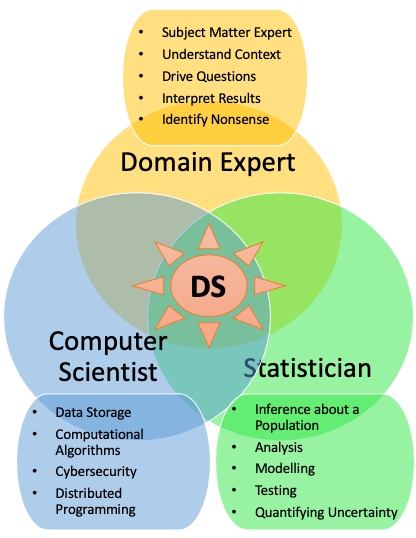

1.0 Data Science and R
Data science blends statistics, computing, and a domain question. This course uses R for that cycle.
1. What this course is for
DATA 612 is statistical programming in R, inside a data-science workflow. You will import data, tidy it, plot it, summarize it, and write the work so someone else (or you, next month) can rerun it.
Data science is a blend of statistics, computing, and a question from a domain. No one person owns every piece. A project is usually a team.

R is the language for this course because it was built for statistics, it is free, and the tidyverse is a consistent grammar for tables. Python is also widely used. We stay with R.
2. A working cycle
Wickham and Grolemund's picture in R for Data Science is the one we will keep coming back to: import, tidy, transform, visualize, model, communicate, then go around again.

The first pass is almost never the last. A plot changes the question. A model sends you back to the table.
3. Tools for the cycle
| Job | What we use |
|---|---|
| Language | R |
| Editor | RStudio / Posit Desktop |
| Tables | tidyverse: dplyr, tidyr, readr |
| Plots | ggplot2 |
| Documents | Quarto (or R Markdown) |
The syllabus on the course page is the contract for due dates and policies. Chapter 1 of R for Data Science is the reading that matches this note.
4. Practice
-
In one sentence, what mix of skills does a data-science project need?
-
Name the six verbs on the R for Data Science cycle.
-
Why does this course use R rather than a spreadsheet for the same tables?